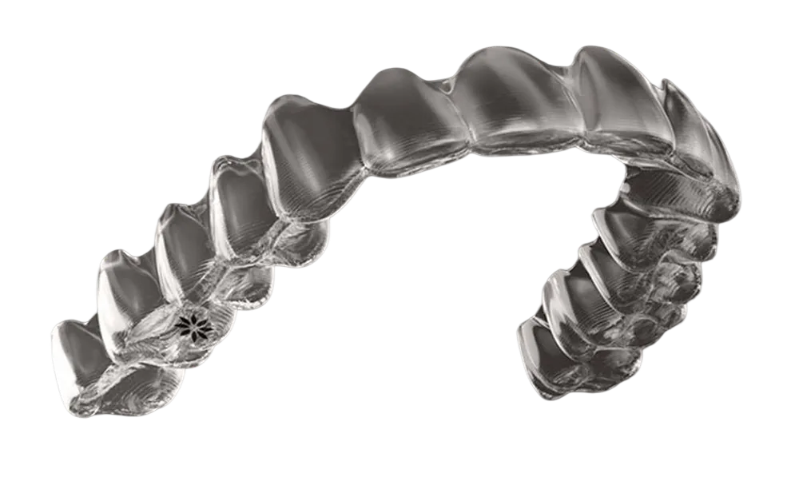

Traitement orthodontique par aligneurs à Aix-en-Provence
Une série de gouttières transparentes, calculée à l’avance, qui déplace les dents par étapes successives. C’est le traitement que nous pratiquons le plus, chez l’enfant, l’adolescent et l’adulte.
Le principe
Une gouttière ne pousse pas une dent. Elle en contient le déplacement.
Un aligneur est une coque en matériau transparent, fabriquée à partir de la forme exacte de vos arcades, mais dessinée pour une position légèrement différente de la position actuelle. En la mettant en bouche, vous appliquez une force douce et permanente qui amène progressivement la dent vers cette nouvelle position.
Une fois le déplacement obtenu, la gouttière suivante prend le relais avec l’étape d’après. Le résultat final n’est jamais l’œuvre d’un aligneur : c’est celui d’une série entière, planifiée dent par dent avant même que la première gouttière ne soit fabriquée.
Des attachements, parfois
Certains mouvements — redresser une racine, faire tourner une prémolaire, extruder une dent — ne s’obtiennent pas avec une simple coque lisse. On colle alors de petits reliefs de la couleur de la dent, appelés attachements, qui donnent à l’aligneur une prise. Ils sont retirés en fin de traitement.
Indications
Ce que l’on traite couramment par aligneurs.
- Un encombrement : des dents qui se chevauchent par manque de place.
- Des espaces entre les dents, dont le diastème médian.
- Des incisives projetées vers l’avant.
- Une supraclusion : les dents du haut recouvrent trop celles du bas.
- Une béance : les dents ne se touchent pas à la fermeture.
- Un articulé croisé localisé.
- Une récidive après un traitement orthodontique ancien.
- Une préparation avant prothèse, implant ou soin parodontal.
Et ce qui demande autre chose
Les décalages squelettiques importants, certaines dents incluses, certaines situations chirurgicales ou de croissance relèvent d’un dispositif fixe, d’un appareil complémentaire, ou d’une prise en charge coordonnée avec un autre praticien. Le rôle du bilan est de trancher ce point avant que vous ne vous engagiez.
Au quotidien
Ce que ça change, concrètement.
Les avantages
- Le brossage et le fil dentaire restent normaux, gouttières retirées.
- Aucune restriction alimentaire, contrairement aux appareils fixes.
- Pas de fil ni de bague susceptible de blesser la joue.
- Une discrétion réelle en situation professionnelle ou scolaire.
- Un plan de traitement visible et discutable avant de commencer.
Les contraintes, dites franchement
- Tout repose sur le temps de port. Un aligneur dans sa boîte ne déplace rien.
- Il faut le retirer à chaque repas et le remettre ensuite, sans exception.
- Une sensation de pression accompagne souvent les premiers jours d’une nouvelle gouttière.
- La contention en fin de traitement n’est pas facultative.
Le déroulé
Dix étapes, du premier rendez-vous à la contention.
Chaque étape a une raison d’être clinique. Aucune n’est un passage administratif.
Consultation
On écoute la demande et on explique ce qui est envisageable.
Bilan orthodontique
Examen clinique, radiographies, photographies.
Empreinte numérique
Un scanner intra-oral relève la forme exacte des arcades.
Diagnostic
Les déplacements nécessaires sont définis dent par dent.
Planification 3D
La séquence complète est calculée puis validée.
Fabrication
La série d’aligneurs est produite à partir du plan validé.
Mise en place
Attachements si besoin, essayage, consignes de port.
Suivi Dental Monitoring
Des scans réguliers entre les rendez-vous.
Contrôles au cabinet
L’examen clinique reste indispensable.
Contention
La phase qui stabilise le résultat dans la durée.
Prix et remboursement
Ce que coûte un traitement, et ce qui est pris en charge.
Un traitement orthodontique fait toujours l’objet d’un devis écrit et détaillé, remis après le bilan. Il n’existe pas de tarif unique : le montant dépend de l’étendue de la correction, du nombre d’aligneurs, de la durée du suivi et de la contention prévue.
En France, l’Assurance Maladie prend en charge les traitements orthodontiques débutés avant le 16e anniversaire, sous condition d’entente préalable. Au-delà de cet âge, le traitement n’est pas remboursé par la Sécurité sociale, mais de nombreuses complémentaires santé prévoient un forfait pour l’orthodontie adulte.
Cela dépend entièrement de la situation de départ et de l’objectif. Une correction limitée peut se compter en quelques mois, une réorganisation complète des arcades en un an et demi à deux ans, parfois davantage. La durée annoncée en début de traitement repose sur la planification et suppose que le temps de port soit respecté.
Oui. Le port est continu, jour et nuit, en dehors des repas et du brossage. C’est même la nuit qui apporte les heures les plus faciles à tenir.
De l’eau, oui. Les boissons chaudes, sucrées ou colorées se prennent gouttières retirées : la chaleur peut déformer le matériau et le sucre reste piégé contre l’émail.
Il faut prévenir le cabinet sans attendre et remettre en place le précédent en attendant les instructions. Ne pas sauter d’étape : la série est une progression, pas une collection.
Non. Certaines situations relèvent d’un appareil fixe, d’un dispositif complémentaire ou d’une prise en charge multidisciplinaire. C’est le rôle du bilan de le déterminer avant de s’engager.

Prendre rendez-vous
Deux façons de commencer.
Je veux consulter au cabinet
Première consultation, bilan orthodontique, examen clinique. Pour un enfant, un adolescent ou un adulte.
Prendre rendez-vousJe veux d’abord une évaluation en ligne
Quelques photos depuis votre téléphone, une première orientation avant de vous déplacer.
Démarrer mon Évaluation Orthodontique